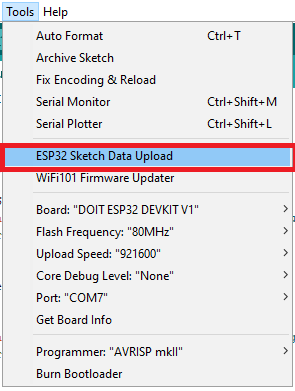
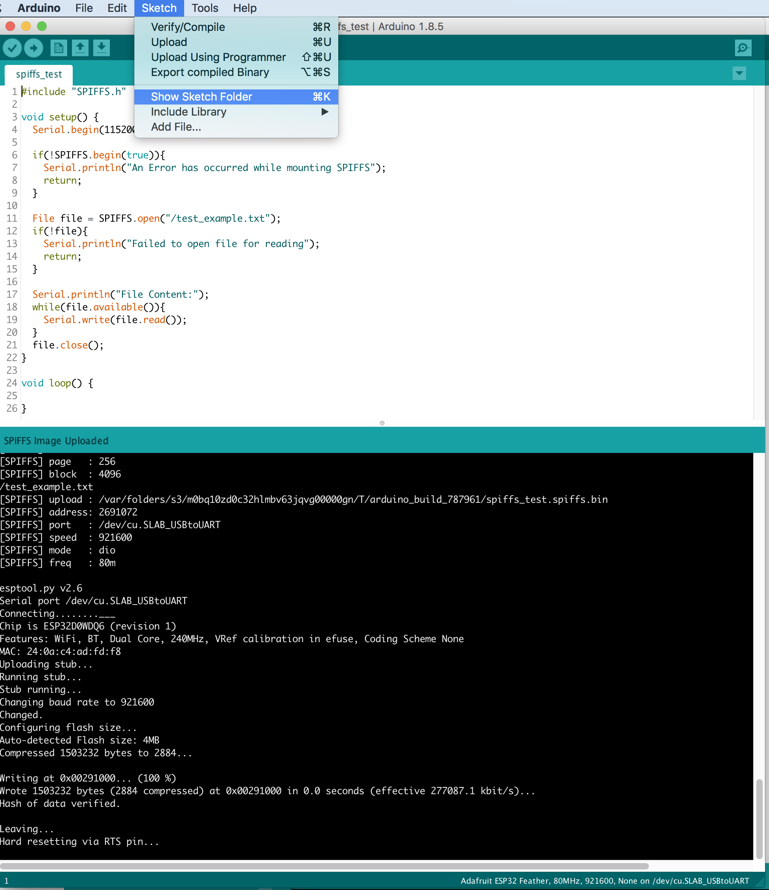
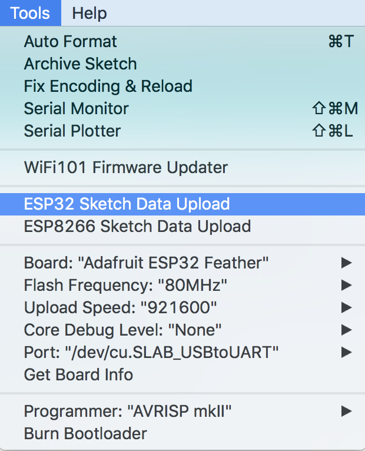
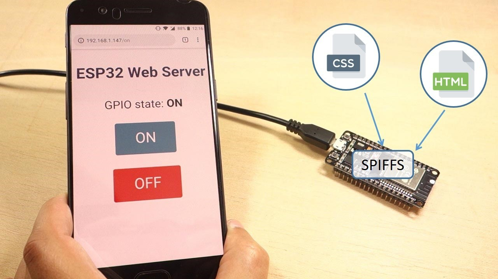
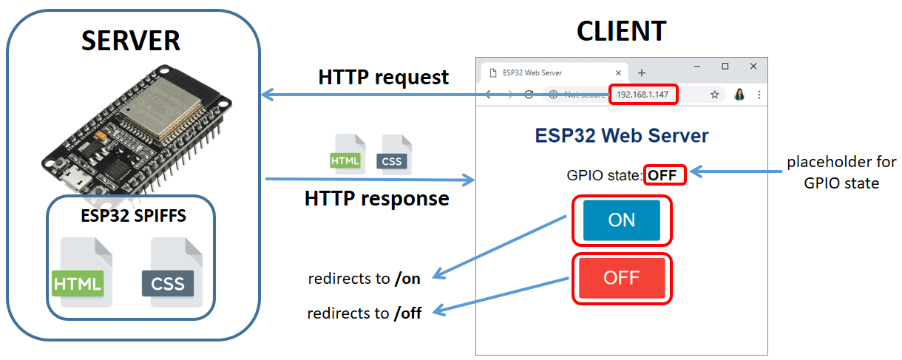
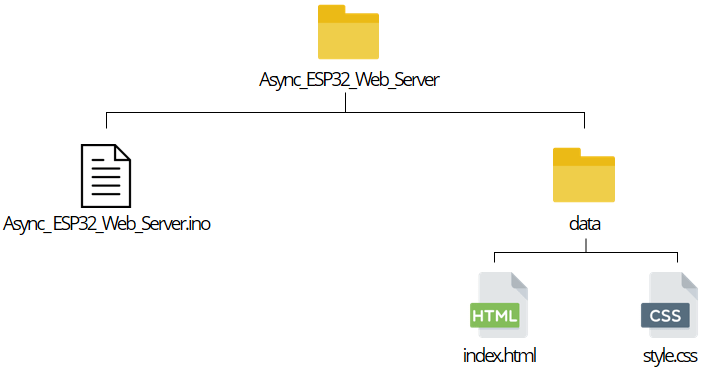

Serial Peripheral Interface Flash File System (SPIFFS)
Setting up the ESP32 as a webserver
Individual Meetings
Spring Show Check In
The ESP32 contains a Serial Peripheral Interface Flash File System (SPIFFS). SPIFFS is a lightweight
filesystem created for microcontrollers with a flash chip, which are connected by SPI bus, like the
ESP32 flash memory. In this article we’re going to show how to easily upload files to the ESP32
filesystem using a plugin for the Arduino IDE.
The Adafruit feather has 1MB of SPIFFS storage available
Create configuration files with settings;
Save data permanently;
Create files to save small amounts of data instead of using a microSD card;
You will now have this folder

Download this code
Open spiffs_test
Under Sketch->Show Sketch Folder

The data folder contains files the data which get's stored in the SFIFFS File system
To upload go to tools -> ESP32 Sketch Data Upload

This does not upload the main program, upload the code normally
Lets look at the code.
How to write a
file
We can upload HTML,CSS and JS to run a webserver

We can upload HTML,CSS and JS to run a webserver

The HTML and CSS files are stored on the ESP32 SPIFFS (Serial Peripheral Interface Flash File
System);
When you make a request on a specific URL using your browser, the ESP32 responds with the
requested files;
When you click the ON button, you are redirected to the root URL followed by
/on and the LED is turned on;
When you click the OFF button, you are redirected to the root URL followed by
/off and the LED is turned off;
On the web page, there is a placeholder for the GPIO state. The placeholder for the GPIO state
is written directly in the HTML file between % signs, for example %STATE%.
Unzip the .zip folder and you should get AsyncTCP-master folder
Rename your folder from AsyncTCP-master to AsyncTCP
Move the AsyncTCPfolder to your Arduino IDE installation libraries folder
Finally, re-open your Arduino IDE

Open ESP32_Async_Web_Server from the code folder
To upload go to tools -> ESP32 Sketch Data Upload
This does not upload the main program, upload the code normally
Lets look at the code.
ESPAsyncWebServer API